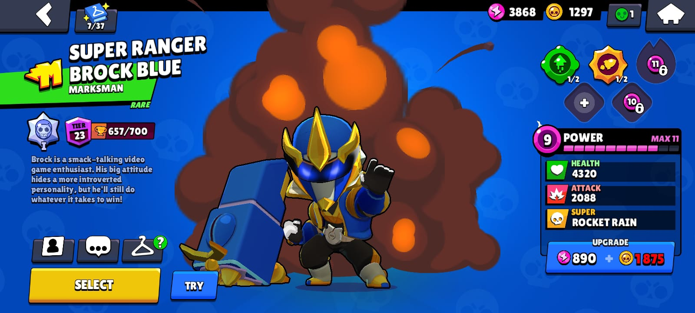

Broc k is a Rare Brawler who has low health but a high damage output. His attack shoots long-ranged rockets that explode and deal area damage in a short radius. His Super fires a barrage of rockets in a large area. His first Gadget, Rocket Laces, allows him to fire at his feet, damaging nearby enemies and knock them back, and launching Brock into the air. His second Gadget, Rocket Fuel, makes Brock's next attack a mega rocket that has a larger explosion radius, destroys walls and travels faster. His first Star Power, More Rockets!, increases the number of rockets fired from his Super. His second Star Power, Rocket No. Four, increases Brock's ammo capacity to 4. His Hypercharge, Rocket Barrage, increases the number of rockets fired from his next Super, which deal very low deal damage.
